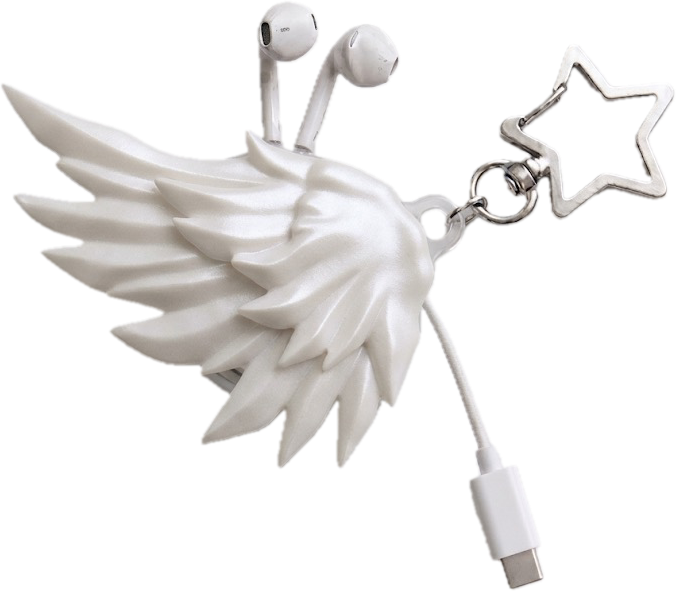

꼬임 방지
사용 후 이어폰 선을 깔끔하게 감아 가방 속 엉킴을 줄입니다.



Why CORD:Y
사용 후 이어폰 선을 깔끔하게 감아 가방 속 엉킴을 줄입니다.
숨기는 생활용품이 아니라 밖으로 드러내도 예쁜 액세서리입니다.
별, 하트, 메탈 파츠와 시즌 컬러로 다른 무드를 만들 수 있습니다.
Styling Cut
등교 전, 카페에서, 이동 중에도 이어폰 선을 정리하는 순간이 나만의 스타일이 됩니다.